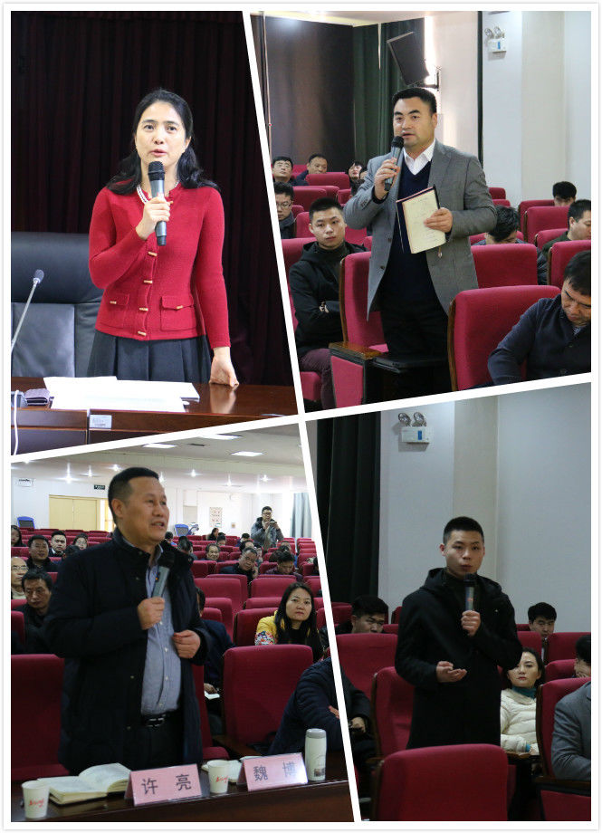

西安市企业家学习贯彻党的十九大精神专题讲座在西安社会主义学院举办
12月23日，市委组织部、市委统战部、市工商联、西安社会主义学院联合举办西安市企业家学习贯彻党的十九大精神专题讲座。
浙江省工商联副主席、浙江新湖集团董事长林俊波应邀为我市企业家作专题报告。市政协副主席、市工商联主席王欢畅、西安社会主义学院副院长史晓英、浙江省工商联宣教处处长李明霞等出席，市委统战部常务副部长、市工商联党组书记乔安涛主持并讲话。
林俊波结合自身实际，用朴实的语言，以幽默的风格，从民营企业家的视角，对党的十九大精神的重大意义、鲜明主题、习近平新时代中国特色社会主义思想等七个方面进行了深入的解读。
报告结束后，林俊波与现场企业家代表就西安营商环境建设、创客未来的发展趋势等问题进行了良好互动。她结合自己在浙江新湖集团的工作实际，作了耐心细致又精彩的解答。
随后，我市党的十九大精神民营企业家宣讲团成员何志方、陈立强和马悦三位企业家结合企业发展实际宣讲十九大精神，并谈了学习体会。他们一致认为，要深刻认识时代变化，深入学习贯彻十九大精神，以习近平新时代中国特色社会主义思想为指引，勇于探索、敢于担当、增强自信，做一名新时代有新作为的企业家；要遵纪守法、光明磊落搞经营，用企业信誉争市场，以“多纳税使国富、多发工资使民强”为根本原则，大力发挥企业家作用，为振兴大西安作出新的贡献。
西安真爱投资集团有限公司董事长何志方
陕西利安信息传播有限公司董事长陈立强
西安三花良治电器有限公司董事长马悦
乔安涛在讲话中对民营企业家提出三点希望，一是要采取多种形式，继续扎实深入地开展学习党的十九大精神活动；二是要结合企业发展的实际，不断增强企业发展的信心，努力做大做强企业，助推大西安发展；三是要把学习十九大精神与学习中发25号文件精神结合起来，弘扬新时代西商精神，履行社会责任，积极参与精准扶贫，助力我市早日完成攻坚脱贫任务。
市工商联兼职副主席（副会长）、全市优秀企业家、创业青年企业家、商会负责人、市属国有企业负责人、全市工商联系统有关负责人等约200人参加讲座。（撰稿/摄影：蔡慧）